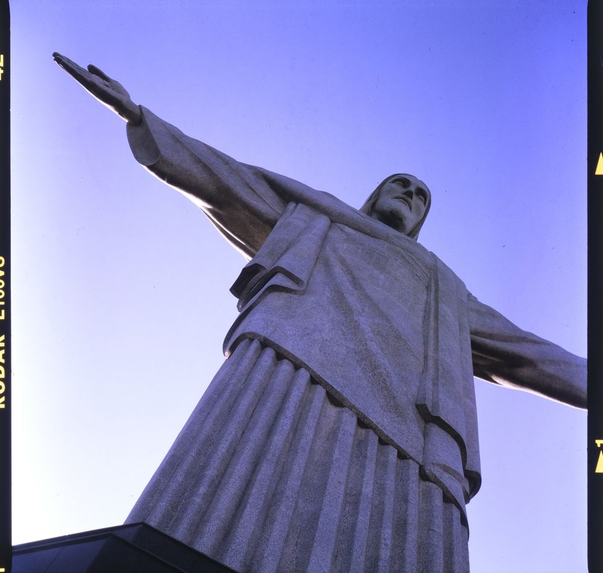
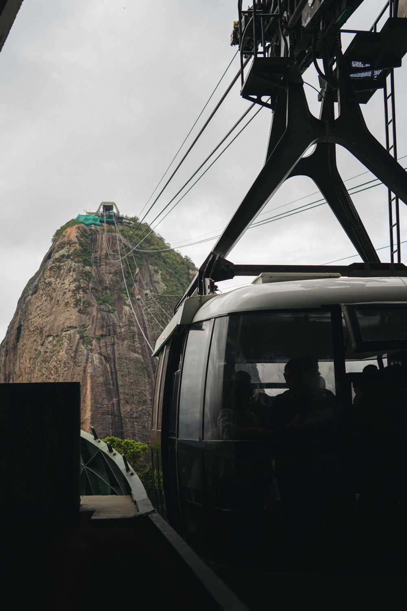
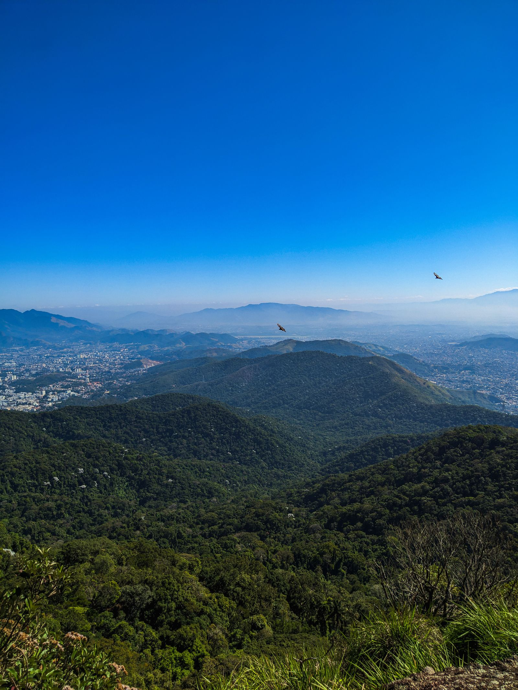
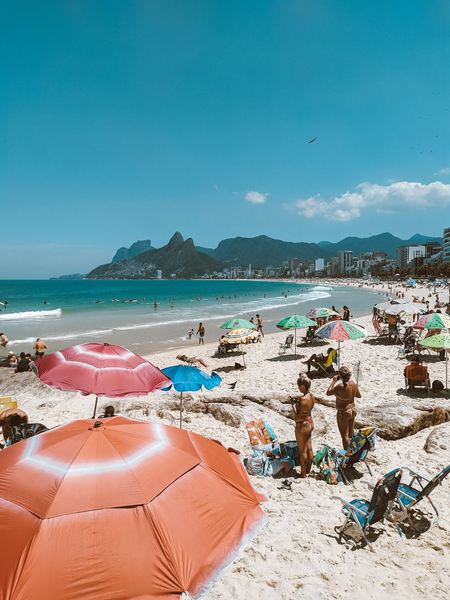
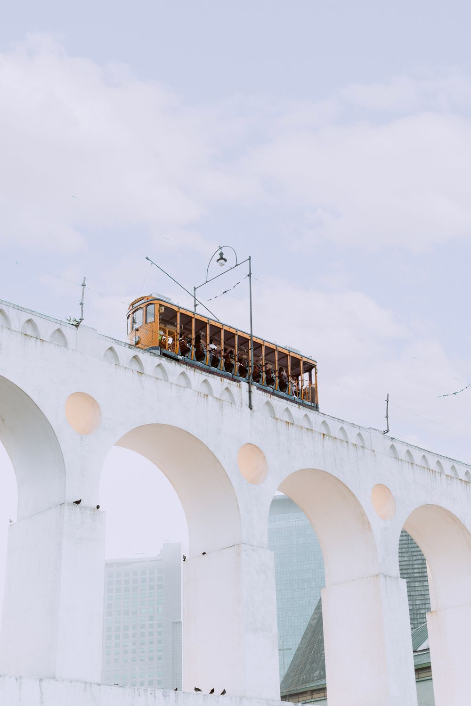

Curiosidades do Rio de Janeiro
Passe o mouse ou toque nos cartões para descobrir fatos sobre o estado.

Cristo Redentor
Cristo Redentor
No alto do Corcovado, a mais de 700 metros de altitude, o Cristo observa a cidade de braços abertos.
- Foi inaugurado em 12 de outubro de 1931.
- Tem 30 metros de altura, ou 38 metros contando o pedestal.
- Em 2007 foi eleito uma das Sete Novas Maravilhas do Mundo.

Pão de Açúcar e o bondinho
Pão de Açúcar e o bondinho
O passeio liga a Praia Vermelha ao Morro da Urca e, depois, ao topo do Pão de Açúcar, a 396 metros de altura.
- O bondinho foi inaugurado em 1912.
- Foi o primeiro teleférico do Brasil.
- Do alto se vê a Baía de Guanabara, Copacabana e o Cristo Redentor.

Mico-leão-dourado
Mico-leão-dourado
Pequeno macaco de pelagem dourada, é um dos maiores símbolos da conservação da natureza no Brasil.
- Na natureza, só existe na Mata Atlântica do estado do Rio de Janeiro.
- Quase foi extinto: nos anos 1970 restavam cerca de 200 na natureza.
- A Reserva Biológica de Poço das Antas, em Silva Jardim, foi criada em 1974 para protegê-lo.

Floresta da Tijuca
Floresta da Tijuca
Uma floresta inteira dentro da cidade, cercada por bairros e com vista para o mar.
- É uma das maiores florestas urbanas do mundo.
- Foi replantada no século 19, a partir de 1861, por ordem de D. Pedro II, depois de ser devastada pelas fazendas de café.
- Hoje faz parte do Parque Nacional da Tijuca, onde fica o Cristo Redentor.

Praias famosas
Praias famosas
Copacabana e Ipanema estão entre as praias mais conhecidas do planeta.
- Copacabana tem cerca de 4 km de areia e o famoso calçadão de ondas em pedra portuguesa.
- A música “Garota de Ipanema”, de Tom Jobim e Vinicius de Moraes (1962), espalhou a Bossa Nova pelo mundo.
- A festa de Réveillon de Copacabana reúne milhões de pessoas na areia.

Carnaval e samba
Carnaval e samba
O Rio é considerado o berço do samba e tem um dos carnavais mais famosos do mundo.
- As escolas de samba desfilam no Sambódromo da Marquês de Sapucaí.
- O Sambódromo foi projetado por Oscar Niemeyer e inaugurado em 1984.
- As matrizes do samba carioca são Patrimônio Cultural do Brasil desde 2007.

Capital do Brasil
Capital do Brasil
Por quase dois séculos, as grandes decisões do país foram tomadas no Rio de Janeiro.
- O Rio foi capital do Brasil de 1763 a 1960, quando a capital passou para Brasília.
- Em 1808 recebeu a Família Real portuguesa, que fugia das tropas de Napoleão.
- Os Arcos da Lapa, antigo aqueduto do período colonial, são uma lembrança dessa época.

O carnaval carioca
O carnaval do Rio de Janeiro mistura a festa de rua, com centenas de blocos espalhados pelos bairros, e os desfiles das escolas de samba no Sambódromo da Marquês de Sapucaí. Cada escola passa meses preparando o samba-enredo, as fantasias, os carros alegóricos e a bateria, e é julgada em quesitos como harmonia, evolução e mestre-sala e porta-bandeira. A festa movimenta milhares de trabalhadores, como costureiras, escultores e músicos, e atrai visitantes do mundo inteiro.